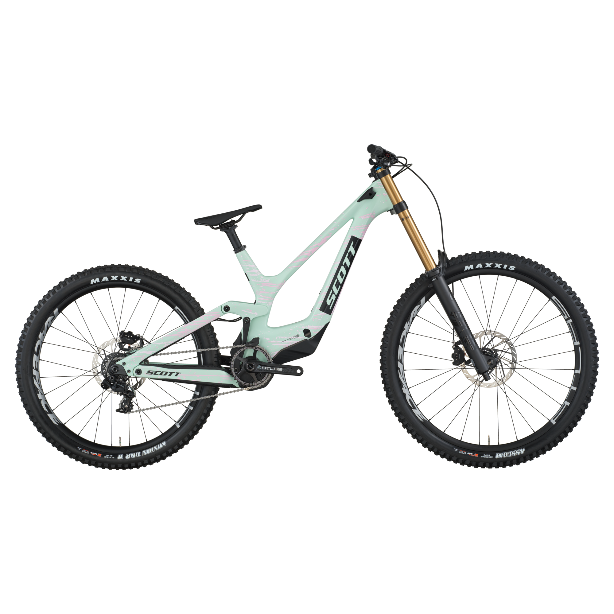
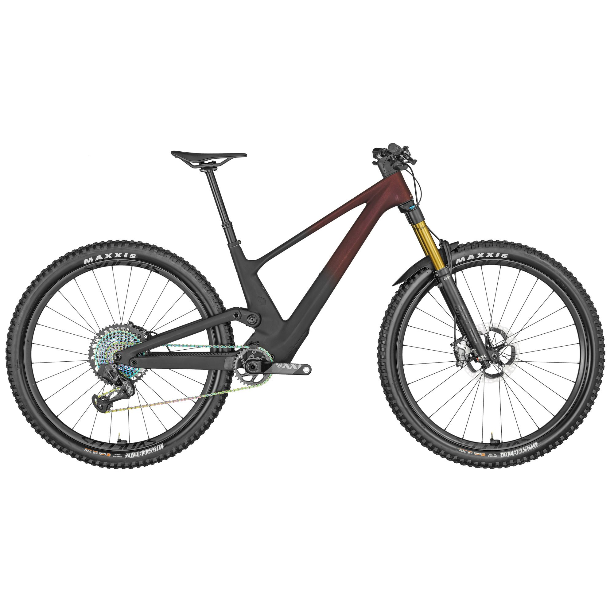

Scott es una marca suiza fundada en 1958, conocida por innovacion y diseño en bicicletas de montaña.
Scott Gambler

Precio: $6.299.00
Bicicleta de descenso DH diseñada para competir al máximo nivel.
Scott Genius

Precio: $4.799.00
Bicicleta de trail/enduro con sistema de suspension regenerable.